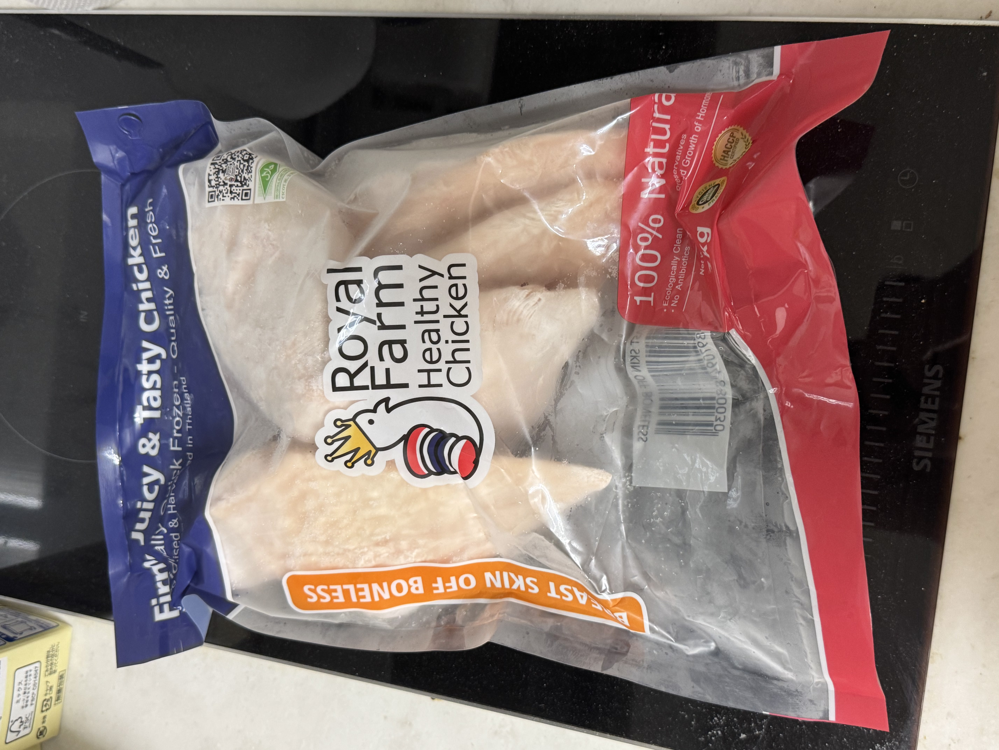
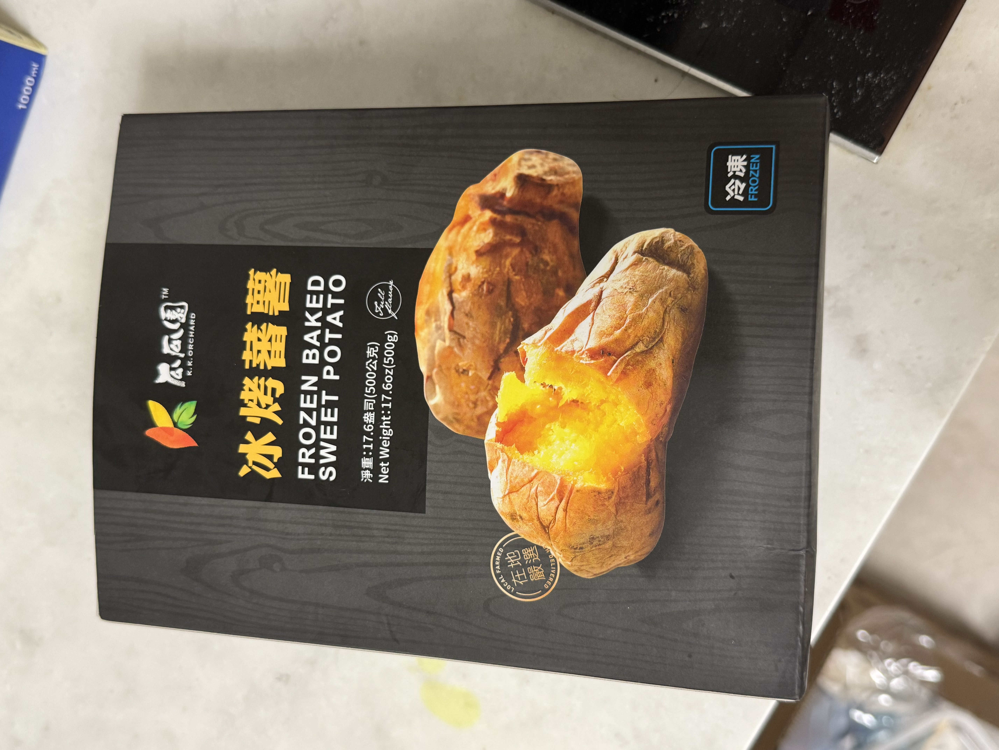

Honey-Garlic Chicken with Broccoli & Sweet Potato Mash
Home


Ingredients
- 1-2 chicken breasts
- 1 frozen baked sweet potato
- 1 cup broccoli florets (fresh or frozen)
- 1 tsp olive oil (or other light oil)
- 1 tsp soy sauce
- ½ tsp honey (optional for sweetness)
- 1 clove garlic, minced
- Salt and pepper to taste
- Optional: paprika or chili flakes for a light kick
Instructions
- Prepare chicken
- Pat the chicken dry and season with salt and pepper.
- Heat a nonstick pan with olive oil over medium heat.
- Add garlic, sauté until fragrant (about 30 seconds).
-
Add chicken breasts and cook for 6-7 minutes per side until cooked
through.
-
Add soy sauce and honey near the end, letting the glaze coat evenly.
- Cook broccoli
-
While the chicken cooks, steam or microwave broccoli until bright
green and tender (about 2–3 minutes).
-
Sprinkle a tiny bit of salt or drizzle with leftover soy–garlic glaze
from the pan.
- Warm sweet potato
-
Microwave the frozen baked sweet potato for 3–5 minutes until hot and
soft.
-
Mash it with a fork, adding a pinch of salt or a tiny drizzle of olive
oil.
- Assemble
- Spread the mashed sweet potato on a plate.
- Slice the chicken and place it on top.
-
Arrange broccoli on the side and pour any remaining glaze from the pan
over everything.
Optional upgrade:
Add a squeeze of lemon or a sprinkle of sesame seeds over the broccoli for
brightness.
This version keeps everything in nutritional harmony — complex carbs
for steady energy, lean protein for muscle repair, and broccoli to round
out the micronutrients.